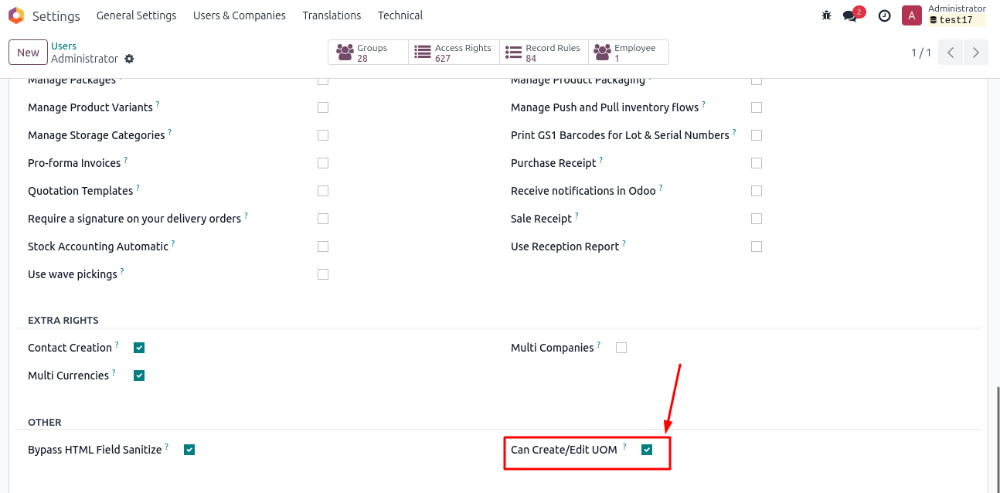

This module provides UoM access control in Odoo 17 by restricting the creation and editing of Units of Measure and UoM Categories. Only users in the Can Create/Edit UOM group are allowed to make changes.

Odoo 17 Community and Enterprise
Keywords: Odoo 17 UoM permissions, Odoo 17 Unit of Measure access control, Restrict UoM editing Odoo 17, UoM security Odoo, Manage UoM creation Odoo, Prevent unauthorized UoM changes Odoo, Odoo UoM data integrity, User rights UoM Odoo 17, Odoo admin UoM restrictions, Odoo security group UoM, Custom UoM access Odoo 17, UoM category permissions Odoo, Odoo 17 module UoM, Odoo 17 customization UoM, Odoo inventory management security, How to restrict unit of measure editing in Odoo 17, Odoo 17 module for UoM access rights, Enhance Odoo UoM security with permissions
Exalt System - https://www.exaltsystem.com